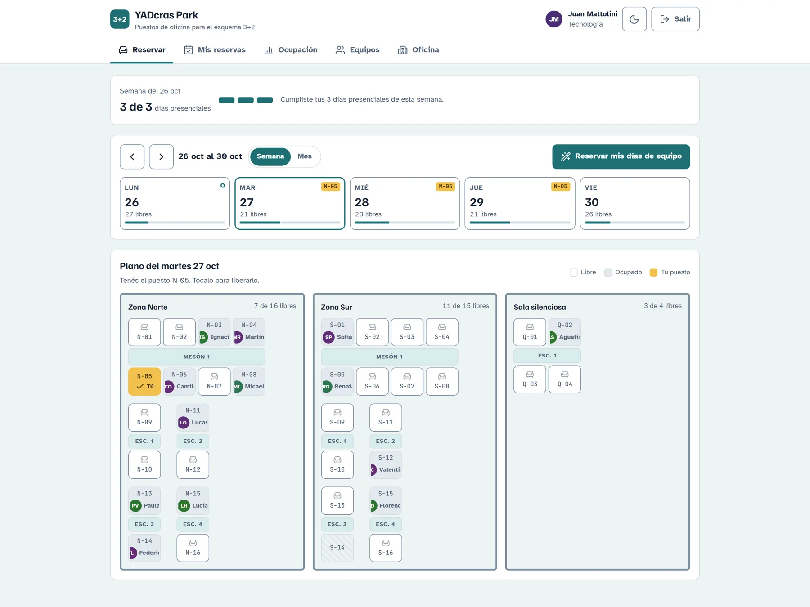
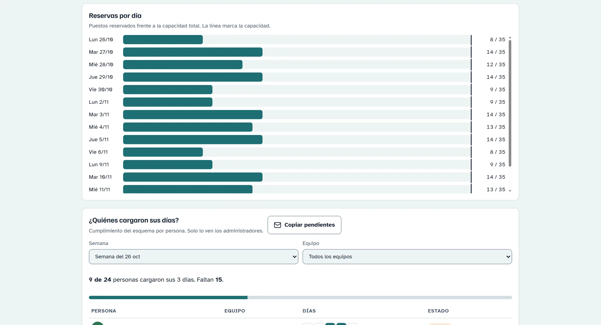

Reservar
La semana con los puestos libres de cada día. Un toque reserva o libera, y un contador muestra cuántos días presenciales llevás.
Lo que reserva otra persona aparece al instante en todas las pantallas, sin recargar.
Una herramienta interna para oficinas con esquema híbrido de 3 días presenciales y 2 en casa. Cada persona reserva su puesto en un plano de la oficina, los equipos coordinan sus días y quien administra ve quién cumplió. Dentro de la app se llama YADcras Park.
Es de uso privado: la app y su código no son públicos.


Capturas de la app real con datos de ejemplo: los nombres son ficticios.
La semana con los puestos libres de cada día. Un toque reserva o libera, y un contador muestra cuántos días presenciales llevás.
Lo que reserva otra persona aparece al instante en todas las pantallas, sin recargar.
Cada zona se dibuja como una sala con sus mesas reales, mesones y escritorios. Quien administra arma la distribución escribiendo las mesas, por ejemplo "8, 2, 2, 2".
Cada equipo tiene 3 días fijos en la oficina. Un optimizador los reparte para que el día más cargado use la menor cantidad de puestos posible.
Con un botón, cada persona reserva sus días de equipo, en el mismo puesto si está libre.
Elegís hasta 3 días fijos y un puesto, y la app los reserva sola cada noche. Si liberás un día, no lo vuelve a reservar. Si tu puesto está ocupado, te da otro de la misma zona.
Vista mensual con los feriados y días no laborables de Argentina 2026 y 2027 ya cargados. Los días que todavía no se pueden reservar muestran cuándo se abren.
Reservas por día frente a la capacidad. Quien administra ve quién cargó sus días cada semana, filtra por equipo y copia la lista de pendientes para avisarles.
Zonas, puestos, puestos fuera de servicio, reglas de reserva, roles de las personas y cierres. Al cargar un cierre se cancelan las reservas de ese día.
En el navegador
Supabase
En segundo plano
Reservar solo de lunes a viernes, nunca un día pasado, dentro del período abierto y nunca en un día cerrado: lo valida Postgres, no solo la pantalla. Así nadie puede saltearse las reglas desde afuera de la app.
Un puesto no se puede reservar dos veces el mismo día y una persona tiene un solo puesto por día. Lo garantizan restricciones únicas en la base, aunque dos personas toquen al mismo tiempo.
Todos ven la oficina, pero cada persona reserva solo a su nombre. Solo quienes administran cambian zonas, equipos y roles, o borran reservas ajenas. Nadie puede darse permisos de administrador a sí mismo.
La reserva recurrente corre en Postgres con pg_cron todas las noches. No hace falta un servidor aparte ni que alguien tenga la app abierta. Recuerda los días que liberaste para no volver a reservarlos.
Feriados y días no laborables 2026 y 2027 cargados como cierres. Si una semana tiene un feriado, la meta de días presenciales baja sola.
Revisión completa con WCAG 2.1 AA: contraste en los dos modos, botones de 44 px, navegación con teclado en pestañas y ventanas, avisos para lectores de pantalla y puestos con nombre ("N-03, ocupado por Ana").
Sin frameworks ni compilación: tres archivos de código y la librería de Supabase copiada localmente. Cualquier cambio se publica con solo subirlo.
La primera persona que se registra queda como administradora. La configuración documenta cómo usar un servidor de correo propio para invitar a muchas personas de una vez.
Desarrollada en octubre de 2026.
Un reel de 33 segundos para presentar la app al equipo: reservar en el calendario, elegir puesto en el plano, el esquema 3 + 2, el cumplimiento del equipo y el modo oscuro.
¿Tu equipo necesita una herramienta así? Contame qué querés ordenar.
mattolinijuansebastian@gmail.com